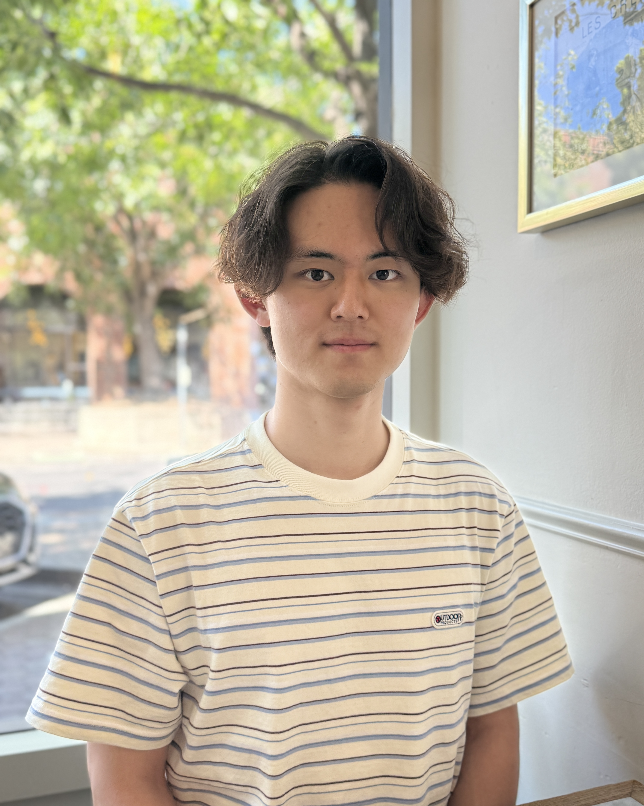

Ph.D. in Mathematics, Stanford University
Stanford, CA, USA · Advisor: Prof. Jonathan Luk

Ph.D. Student in Mathematics, Stanford University
I am a third-year Ph.D. student in the Department of Mathematics at Stanford University, advised by Prof. Jonathan Luk. My research is in partial differential equations, with a focus on kinetic theory and mathematical general relativity.
Before Stanford, I received my B.S. in Mathematical Sciences at KAIST, where I worked with Prof. Moon-Jin Kang.
Partial Differential Equations · Kinetic Theory · General Relativity